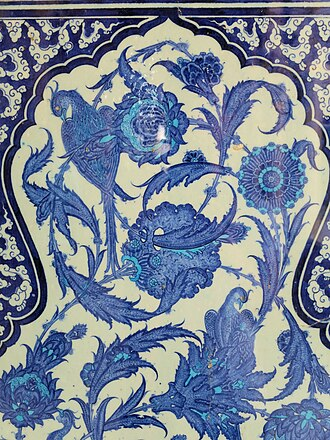
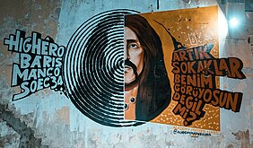

Culture
Turkey has a very diverse culture that is a blend of various elements of the Turkic, Anatolian, Byzantine and Ottoman cultures (the latter was in many aspects a continuation of both the Greco-Roman and Islamic cultures) with Western culture and traditions, a process that started with the Westernization of the Ottoman Empire and still continues today. This mix originally began as a result of the encounter of the Turks and their culture with those of the peoples they came across during their migration from Central Asia to the West. Contemporary Turkish culture during the republican period is a product of efforts to create a "modern" Western society, while maintaining traditional, religious and historical values. The culture has influenced European art and fashion, particularly between the 16th and 18th centuries, during the peak of Ottoman power – a phenomenon that was called Turquerie.
Visual arts
Ottoman miniature is linked to the Persian miniature tradition and is likewise influenced by Chinese painting styles and techniques. The words tasvir or nakış were used to define the art of miniature painting in Ottoman Turkish. The studios the artists worked in were called nakkaşhane. The understanding of perspective was different from that of the nearby European Renaissance painting tradition, and the scene depicted often included different time periods and spaces in one picture. They followed closely the context of the book they were included in, more illustrations than standalone works of art. Sixteenth-century artists Nakkaş Osman and Matrakçı Nasuh are among the most prominent artists of this era.
Turkish painting, in the Western sense, developed actively starting from the mid 19th century. The first painting lessons were scheduled at what is now the Istanbul Technical University (then the Imperial Military Engineering School) in 1793, mostly for technical purposes. In the late 19th century, human figure in the Western sense was being established in Turkish painting, especially with Osman Hamdi Bey. Impressionism, among the contemporary trends, appeared later on with Halil Pasha. Other important Turkish painters in the 19th century were Ferik İbrahim Paşa, Osman Nuri Paşa, Şeker Ahmet Paşa, and Hoca Ali Riza.
Carpet (halı) and tapestry (kilim) weaving is a traditional Turkish art form with roots in pre-Islamic times. During its long history, the art and craft of weaving carpets and tapestries in Turkey has integrated numerous cultural traditions. Apart from the Turkic design patterns that are prevalent, traces of Persian and Byzantine patterns can also be detected. There are also similarities with the patterns used in Armenian, Caucasian and Kurdish carpet designs. The arrival of Islam in Central Asia and the development of Islamic art also influenced Turkic patterns in the medieval period. The history of the designs, motifs and ornaments used in Turkish carpets and tapestries thus reflects the political and ethnic history of the Turks and the cultural diversity of Anatolia. However, scientific attempts were unsuccessful, as yet, to attribute a particular design to a specific ethnic, regional, or even nomadic versus village tradition.
The earliest examples of paper marbling, called ebru in Turkish, are said to be a copy of the Hâlnâme by the poet Arifî. The text of this manuscript was rendered in a delicate cut paper découpage calligraphy by Mehmed bin Gazanfer and completed in 1540, and features many marbled and decorative paper borders. One early master by the pseudonym of Şebek is mentioned posthumously in the earliest Ottoman text on the art known as the Tertib-i Risâle-i Ebrî, which is dated based on internal evidence to after 1615. The instructions for several ebru techniques in the text are accredited to this master. Hatip Mehmed Efendi is accredited with developing motifs and perhaps early floral designs, although evidence from India appears to contradict some of these reports. Despite this, marbled motifs are commonly referred to as hatip designs in Turkey today.
Literature and theatre
Interaction between the Ottoman Empire and the Islamic world along with Europe contributed to a blend of Turkic, Islamic and European traditions in modern-day Turkish music and literary arts.[500] Turkish literature was heavily influenced by Persian and Arabic literature during most of the Ottoman era. The Tanzimat reforms of the 19th century introduced previously unknown Western genres, primarily the novel and the short story. Many of the writers in the Tanzimat period wrote in several genres simultaneously: for instance, the poet Namık Kemal also wrote the 1876 novel İntibâh (Awakening), while the journalist Şinasi has written, in 1860, the first modern Turkish play, the one-act comedy "Şair Evlenmesi" (The Poet's Marriage). Most of the roots of modern Turkish literature were formed between 1896 and 1923.
The first radical step of innovation in 20th century Turkish poetry was taken by Nâzım Hikmet, who introduced the free verse style. Another revolution in Turkish poetry came about in 1941 with the Garip movement led by Orhan Veli, Oktay Rıfat and Melih Cevdet.
The mix of cultural influences in Turkey is dramatized, for example, in the form of the "new symbols of the clash and interlacing of cultures" enacted in the novels of Orhan Pamuk, recipient of the 2006 Nobel Prize in Literature.
The origin of Turkish theater dates back to ancient pagan rituals and oral legends. The dances, music and songs performed during the rituals of the inhabitants of Anatolia millennia ago are the elements from which the first shows originated. In time, the ancient rituals, myths, legends and stories evolved into theatrical shows. Starting from the 11th-century, the traditions of the Seljuk Turks blended with those of the indigenous peoples of Anatolia and the interaction between diverse cultures paved the way for new plays. Meddah were storytellers who performed in front of audiences during the Ottoman period.Karagöz and Hacivat are the lead characters of the traditional Turkish shadow play, popularized during the Ottoman period and then spread to most ethnic groups of the Ottoman Empire.
After the Tanzimat period, characters in Turkish theatre were modernized and plays were performed on European-style stages, with actors wearing European costumes. Following the restoration of constitutional monarchy with the Young Turk Revolution in 1908, theatrical activities increased and social problems began to be reflected at the theatre as well as in historical plays. A theatrical conservatoire, Darülbedayi-i Osmani (which became the nucleus of the Istanbul City Theatres) was established in 1914. Numerous Turkish playwrights emerged in this era, and the first Turkish musicals were also written. In time, Turkish women began to appear on stage; until then, female roles had only been played by actresses who were members of Turkey's ethnic minorities. Today there are numerous private theatres in the country, together with those which are subsidized by the government, such as the Turkish State Theatres.
Music and dance
The roots of traditional music in Turkey span across centuries to a time when the Seljuk Turks migrated to Anatolia and Persia in the 11th century and contains elements of both Turkic and pre-Turkic influences. Much of its modern popular music can trace its roots to the emergence in the early 1930s drive for Westernization.
With the assimilation of immigrants from various regions the diversity of musical genres and musical instrumentation also expanded. Turkey has also seen documented folk music and recorded popular music produced in the ethnic styles of Greek, Armenian, Albanian, Polish and Jewish communities, among others.
Many Turkish cities and towns have vibrant local music scenes which, in turn, support a number of regional musical styles. Despite this however, western music styles like pop music and kanto lost popularity to arabesque in the late 1970s and 1980s. It became popular again by the beginning of the 1990s, as a result of an opening economy and society. The resurging popularity of pop music gave rise to several international Turkish pop stars such as Ajda Pekkan, Sezen Aksu, Erol Evgin, MFÖ, Tarkan, Sertab Erener, Teoman, Kenan Doğulu, Levent Yüksel and Hande Yener. Internationally acclaimed Turkish jazz and blues musicians and composers include Ahmet Ertegun (founder and president of Atlantic Records), Nükhet Ruacan and Kerem Görsev.